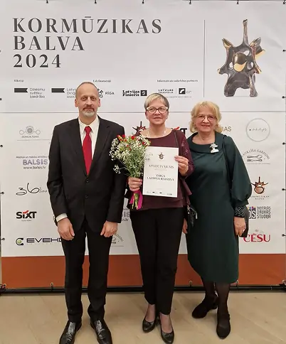
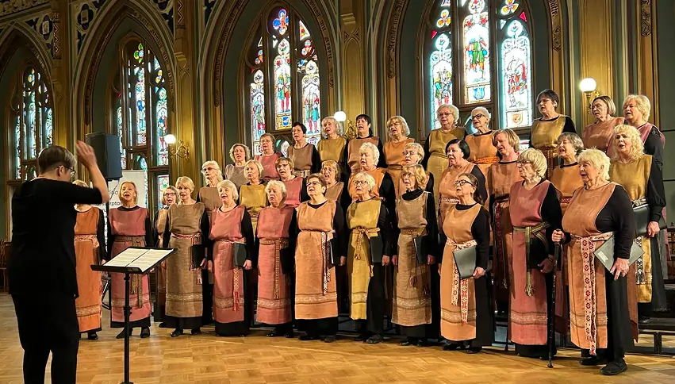
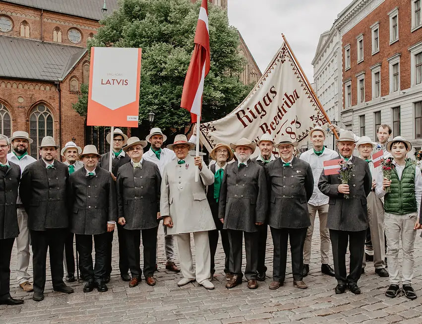
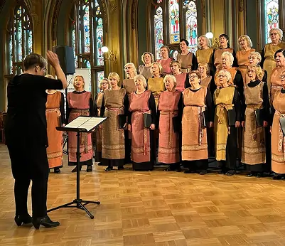

About us
Who we are
On Sunday, 18 January, the cultural venue Hanzas perons will open its new concert cycle, “Piano Sundays”, with a performance by the acclaimed Swiss-born pianist, composer, and improviser Sylvie Courvoisier. These will be a series of vibrant solo concerts by outstanding pianists, taking place at the Perons on the third Sunday of each month.
“The fact that her music is both aesthetically beautiful and strangely enigmatic only reaffirms her mastery as a composer,” writes Thom Jurek of All Music Guide about Sylvie Courvoisier. It is hard to disagree—especially once one becomes “hooked” by the curious, mysterious traits in her music that are difficult to label at first encounter. Even more so when witnessing the pianist performing on and then suddenly inside the piano—sometimes without a single curl of hair moving, at other times leaping and dancing along with the music.


By monitoring all the truck's indicators around the clock, guarantees the safety
Paralēli konkursa programmai Rīgas Latviešu biedrības namā tika skandētas mīlas dziesmas koncertprogrammā “Ja mīlu es” (13.02.) – tajā piedalījās arī lieliskie vīru kori “Frachori” un “Dziedonis” – un sumināts pavasaris pasākumā “Ar pavasara elpu” (8.03.), kuru kuplināja vokālais ansamblis “Naktsputni” no Lubānas, Skrīveru Kultūras centra vokālais ansamblis “Ferrovia”, Rīgas Kultūras centra “Iļģuciems” vokālā grupa “Krētas freska” un Emīla Dārziņa mūzikas skolas audzēknes Nellija Šāvēja un Katrīna Kadiša.
Neizpalika arī dalība ikgadējos pasākumos, kas kļuvusi par kora tradīciju: - Rīgai veltītais koncerts “Rīgas redzējums” (24.04., Kultūras centrs “Imanta”. Tajā Rīgu daudzināja vokālās grupas “Freska” un “Krētas freska”, Emīla Dārziņa Mūzikas vidusskolas audzēkņi un koris “ERELBE”.- Mātes dienai veltītais koncerts (13.05., RLB Baltā zāle). Piedalījās “ERELBE”, “Krētas freska”, Emīla Dārziņa Mūzikas vidusskolas bērnu kori un “Fresca Nova” solisti.- Labdarības koncerti Ģimenes atbalsta centrā “Dzeguzīte” Iršu pagastā un Sociālās aprūpes centrā Vecbebros (17.05.), kas tika apvienoti ar iespēju apciemot senioru mājās mītošās mūsu bijušās koristes Maiju un Ernu. - Komunistiskā genocīda upuru piemiņas pasākums Torņakalna stacijas piemiņas memoriālā (14.06).Pirmais pusgads noslēdzās 21. jūnijā Madonas estrādē Latvijas senioru koru svētkos “No Gaiziņa Latviju redzot”.
Paralēli konkursa programmai Rīgas Latviešu biedrības namā tika skandētas mīlas dziesmas koncertprogrammā “Ja mīlu es” (13.02.) – tajā piedalījās arī lieliskie vīru kori “Frachori” un “Dziedonis” – un sumināts pavasaris pasākumā “Ar pavasara elpu” (8.03.), kuru kuplināja vokālais ansamblis “Naktsputni” no Lubānas, Skrīveru Kultūras centra vokālais ansamblis “Ferrovia”, Rīgas Kultūras centra “Iļģuciems” vokālā grupa “Krētas freska” un Emīla Dārziņa mūzikas skolas audzēknes Nellija Šāvēja un Katrīna Kadiša.
Nulla sit amet convallis magna, at tristique arcu. Maecenas placerat quis augue a ullamcorper. Donec tempor enim sed varius tempor. Mauris sit amet dignissim sem. Nam lacus nisi, fringilla in porttitor in, vulputate ac dolor.
RĪGAS LATVIEŠU BIEDRĪBAS STATŪTI
On Sunday, 18 January, the cultural venue Hanzas perons will open its new concert cycle, “Piano Sundays”, with a performance by the acclaimed Swiss-born pianist, composer, and improviser Sylvie Courvoisier. These will be a series of vibrant solo concerts by outstanding pianists, taking place at the Perons on the third Sunday of each month.
“The fact that her music is both aesthetically beautiful and strangely enigmatic only reaffirms her mastery as a composer,” writes Thom Jurek of All Music Guide about Sylvie Courvoisier. It is hard to disagree—especially once one becomes
PDF(3.5Mb)
By monitoring all the truck's indicators around the clock, guarantees the safety
Neizpalika arī dalība ikgadējos pasākumos, kas kļuvusi par kora tradīciju: - Rīgai veltītais koncerts “Rīgas redzējums” (24.04., Kultūras centrs “Imanta”. Tajā Rīgu daudzināja vokālās grupas “Freska” un “Krētas freska”, Emīla Dārziņa Mūzikas vidusskolas audzēkņi un koris “ERELBE”.- Mātes dienai veltītais koncerts (13.05., RLB Baltā zāle). Piedalījās “ERELBE”, “Krētas freska”, Emīla Dārziņa Mūzikas vidusskolas bērnu kori un “Fresca Nova” solisti.- Labdarības koncerti Ģimenes atbalsta centrā “Dzeguzīte” Iršu pagastā un Sociālās aprūpes centrā Vecbebros (17.05.), kas tika apvienoti ar iespēju apciemot senioru mājās mītošās mūsu bijušās koristes Maiju un Ernu. - Komunistiskā genocīda upuru piemiņas pasākums Torņakalna stacijas piemiņas memoriālā (14.06).Pirmais pusgads noslēdzās 21. jūnijā Madonas estrādē Latvijas senioru koru svētkos “No Gaiziņa Latviju redzot”.
Paralēli konkursa programmai Rīgas Latviešu biedrības namā tika skandētas mīlas dziesmas koncertprogrammā “Ja mīlu es” (13.02.) – tajā piedalījās arī lieliskie vīru kori “Frachori” un “Dziedonis” – un sumināts pavasaris pasākumā “Ar pavasara elpu” (8.03.), kuru kuplināja vokālais ansamblis “Naktsputni” no Lubānas, Skrīveru Kultūras centra vokālais ansamblis “Ferrovia”, Rīgas Kultūras centra “Iļģuciems” vokālā grupa “Krētas freska” un Emīla Dārziņa mūzikas skolas audzēknes Nellija Šāvēja un Katrīna Kadiša.


By monitoring all the truck's indicators around the clock, guarantees the safety
Paralēli konkursa programmai Rīgas Latviešu biedrības namā tika skandētas mīlas dziesmas koncertprogrammā “Ja mīlu es” (13.02.) – tajā piedalījās arī lieliskie vīru kori “Frachori” un “Dziedonis” – un sumināts pavasaris pasākumā “Ar pavasara elpu” (8.03.), kuru kuplināja vokālais ansamblis “Naktsputni” no Lubānas, Skrīveru Kultūras centra vokālais ansamblis “Ferrovia”, Rīgas Kultūras centra “Iļģuciems” vokālā grupa “Krētas freska” un Emīla Dārziņa mūzikas skolas audzēknes Nellija Šāvēja un Katrīna Kadiša.
Paralēli konkursa programmai Rīgas Latviešu biedrības namā tika skandētas mīlas dziesmas koncertprogrammā “Ja mīlu es” (13.02.) – tajā piedalījās arī lieliskie vīru kori “Frachori” un “Dziedonis” – un sumināts pavasaris pasākumā “Ar pavasara elpu” (8.03.), kuru kuplināja vokālais ansamblis “Naktsputni” no Lubānas, Skrīveru Kultūras centra vokālais ansamblis “Ferrovia”, Rīgas Kultūras centra “Iļģuciems” vokālā grupa “Krētas freska” un Emīla Dārziņa mūzikas skolas audzēknes Nellija Šāvēja un Katrīna Kadiša.